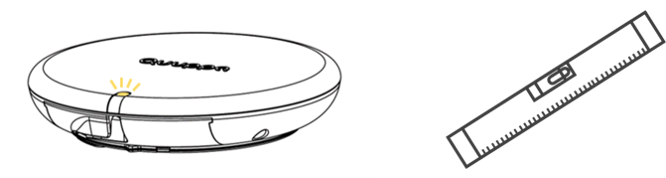

Use the Generation Q Level Indicator
The Quuppa system is known for high accuracy and reliable positioning. To achieve this, the Quuppa Locators are used to measure the angle of arrival of packets from the tracked tags in the environment. For best results, it's important that the Locators are mounted correctly and precisely so that they can provide accurate angle measurements for the tags. This is why Quuppa recommends mounting the Locators flat on the ceiling whenever possible.
The Locator level indicator is a tool that can be used to ensure that your Locator is installed flat and horizontal against the ceiling. It works much like a spirit or bubble level that you would use for construction projects, but rather than a bubble and a marked centre point to indicate whether an item is level, the Locators LED indicator light sequence is used to tell you if the Locator is tilted more that 4 degrees. It's a useful tool for validating the quality of the installation, that can save you time trying to troubleshoot positioning accuracy issues down the line.

The level indicator is only available for Generation Q Locators, i.e. Q17 and Q35 Locators, with the latest firmware.
This document will walk you through using the tool to ensure a successful deployment.
Prerequisites
- Quuppa system running the latest Quuppa software, software release 7.5 of newer
- Generation Q Locators, updated to the latest firmware version
Using the Level Indicator
To start deploying a Quuppa system using the level indicator, follow these steps:
- Set up your Quuppa Positioning Engine (QPE) and install a DHCP server.
- Before mounting the Locators to the ceiling, connect them to the QPE using Ethernet cables and a PoE switch and update the Locator firmware to run the latest version. For more information, see our Upgrade Firmware for Generation Q Locator document.
- Install the Locator mounting bracket firmly to the desired spot on the ceiling.
- Connect the Locator to the mounting bracket and check the indicator light to see if the Locator is correctly aligned. If you see a yellow light blinking in between the normal indicator light modes, the Locator is not yet completely flat. Adjust the alignment of the Locator until you don't see the yellow light anymore. For more information about the Locator's indicator light behaviour, see the table of the level indicator's sequences below.
- Once you have completed the installation for one Locator, checking that the
alignment is good, move onto repeating the same process for the next Locator. Note:In some special cases, you may want to install the Locators tilted on purpose. In these cases, you can disregard the level indicator information while installing the Locator. We recommend marking the desired tilt for the Locator in the site plan using the Quuppa Site Planner (QSP) software so that the QPE can take this into account. If you are considering using tilted Locators for your project, please contact Quuppa first to discuss the options and best practices for your case.
Table of Level Indicator's Sequences
| Sequence with Flat-Mounted Locator | Locator Level Indicator Warning Sequence | Description |
|---|---|---|
 Static red |
Long red blink followed by a yellow blink |
Locator powered |
|
Blinking red - yellow |
Locator connected to network |
|
Blinking blue |
Blinking blue - yellow |
Locator in deployment mode |
Static blue |
Long blue blink followed by a yellow blink* |
Locator in tracking mode |


* Unless the Locator has been marked as tilted in the site plan and the real life tilt matches that which is marked in the site plan, in which case the normal static blue light for indicating the tracking mode applies.